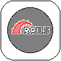
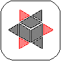
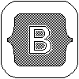
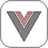
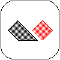
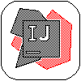
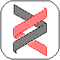
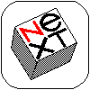
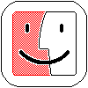

[ Name ] Mustafa
[ Description ] Yet another random / ordinary dev (junior).
[ Statement ] I do respect powerful programming languages.
[ Believe / opinion ]
I do prefer clarity (verbosity) over simplicity.
[ Believe / opinion ]
Simplicity in itself is a powerful framework so you can use it and take advantage of.
[ Believe / opinion ]
I do like Java verbose boilerplate, and the beauty of Ruby, at the same time.
[ Believe / opinion ]
Every framework is built upon a certain conviction, choosing a framework isn't
a neutral act it's an ideological act. You're not just picking what's convenient; you're aligning
yourself with a set of beliefs about how things should be done.
[ Information ] Definition of a powerful programming language
There are several elements that may govern the definition of a powerful programming language,
a powerful programming language is language with:
- A massive popularity.
- A massive ecosystem and massive amount of packages.
[ Information ] Powerful programming languages


[ About ] Favorite programming languages


[ About ] Admired / respected programming languages


[ About ] Favorite frameworks


[ About ] Favorite web stack



[ About ] Favorite PaaS / self-hosted PaaS
[ About ] Favorite IDE / text editor


[ About ] Favorite operating system


[ About ] Favorite game engine


[ About ] Favorite database